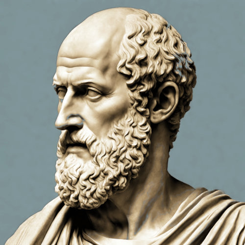

Four Levels of Identity in Hermetical Astrology
Identity nowadays, is a field of study within many diverse disciplines, including law, medicine, philosophy and psychology. This is not too surprising, because all of these in turn developed as specialised areas of research out of the more ancient Natural Philosophy. For thousands of years, Natural Philosophy regarded, studied and documented everything occurring in the natural world, known then as the universe or cosmos, together with the human experience of it. The modern idea of identity is mainly centered around external appearances even if they are described as having emanated from inside a person. Our Hermetic understanding and treatment of Personal Identity, is much more comprehensive.Identity and Self
Both of these terms relate to how a person exists as an individual within the differing frameworks of "agency, self-determination, moral and legal responsibility" (quote: Udo Thiel, The Early Modern Subject, p1). "Identity" is a complex subject involving a person's characteristics, changing and unchanging, consciously and unconsciously. "Self", on the other hand, develops out of a person's awareness of personal identity in a continuous lifelong fashion. The attributes of the self generally are fixed throughout life, such as genetic inheritance. Self remains self, independent of changes in identity.Some Personal Alchemy
The techniques presented here are firmly rooted in both philosophical and technical Hermetism, being reminiscent in particular of astrology capable of analysing and describing a person as well as alchemy, known to manipulate the cosmic elements of Fire, Air, Water and Earth. The Personal Identity may be treated through these in such a way as to make it susceptible to alteration. These changes are known in alchemy as phases. In light of that, it is a matter of aligning the elements to the identity which we shall do.The rhythms of the cosmos flow eternally. Birth is a significant moment of coming into existence as a separate entity and becoming, throughout life, a part of that flow. The place and time of birth denote the basis of Personal Identity with an inborn motivation for actions and experiences. Astrological observation is a look at the sky from the place and moment of birth, and represents, with the aid of a chart, the cosmic identity of the subject. Astrology not only describes the pull of the eternal flow of the universe's movements but also the inherent momentum. Life is a blend of being carried along by transient cosmic forces and the reshaping caused by our own utilisation of that personal momentum.
closely resemble the symbolism of the twelve
signs of the Zodiac:
The Innocent Child — Safety, open-minded, naivety
The Everyman — Equality, empathy, anxious attachment
The Hero — Mastery, discipline, egotistical
The Caregiver — Service, mentor, martyr to others' needs
The Explorer — Freedom, ambition, outcast
The Rebel — Liberation, passionate idealism, risk of terror
The Lover — Intimacy, commitment, fear of being alone
The Creator — Innovation, creative, perfectionist
The Joker — Pleasure, wu wei, frivolity
The Sage — Knowledge, methodical, overthinking
The Magician — Power, charisma, manipulative
The Ruler — Control, leader, tyrannical
Defining Identity
There is always the possibility that identity is a difficult word to fully comprehend. The idea of Personal Identity has kept the great thinkers of the world busy since the beginning of recorded history, that is, around 3000 BC. The philosopher John Locke (1632-1704), in his 1694 second edition of "An Essay Concerning Human Understanding", presented the first extended treatment of the topic of Personal Identity, in which he defined it as being the sameness of one's consciousness. He argued that it equals "a thinking intelligent being, that has reason and reflection, and can consider itself as itself, the same thinking thing, in different times and places".This idea necessarily presents a number of problems. In more modern terms, a person's identity is that which persists over time, yet that definition doesn't include what it is, which persists. Of course, over time many characteristics, such as behaviour or looks, which could be used to define or recognise a person, come and go, yet through those changes, the person still remains that person.
This raises the question as to whether a person's identity is material, and simply equal to the body, or immaterial, such as being characteristic of mind and soul. Changes to the body through ageing for instance don't seem to affect the recognition of a person as much as alteration in mental or behavioural states, for instance as the result of health issues. Identity can seem to change to those experiencing a person over time, but from a legal point of view, it doesn't.
So, that which is being presented here, from a Hermetic point of view, is that Personal Identity is a complex combination of all of those things which have been mentioned, interacting with each other, the environment and other people. Our study and treatment concerns those parts considered to be part of the identity, individually and in combination. In essence identity is all that a person has or owns and which can be regarded personally as part of oneself. This excludes family, animals and other living creatures because they (should) have their own identities belonging to them, which is not always the case. Even though a lot of people own animals, it is unlikely that those animals would be regarded by the owner as being part of his or her self or Personal Identity, no matter how important they may be.
 The psychologist Carl Gustav Jung (1875-1961) who concerned himself over Personal Identity,
The psychologist Carl Gustav Jung (1875-1961) who concerned himself over Personal Identity, was an ardent researcher into Hermetism with an emphasis on the Hermetic Arts of Astrology
and Alchemy. Much of his writing was based on this knowledge.
In a letter written to Hindu astrologer B.V. Raman, September 6th 1947 - Carl Jung wrote:
"Since you want to know my opinion about astrology, I can tell you that I've been interested in this particular activity of the human mind since more than 30 years. As I am a psychologist, I am chiefly interested in the particular light the horoscope sheds on certain complications in the character. In cases of difficult psychological diagnosis, I usually get a horoscope in order to have a further point of view from an entirely different angle. I must say that I very often found that the astrological data elucidated certain points which I otherwise would have been unable to understand. From such experiences I formed the opinion that astrology is of particular interest to the psychologist, since it contains a sort of psychological experience which we call 'projected' - this means that we find the psychological facts as it were in the constellations." (from Tapan Das, Astrology, Consciousness & Soul)
Some (especially Hermetic) Quotes from C.G.Jung:
- The privilege of a lifetime is to become who you truly are.
- Until you make the unconscious conscious, it will direct your life and you will call it fate.
- There’s no coming to consciousness without pain.
- People will do anything, no matter how absurd, to avoid facing their own souls.
- Your vision will become clear only when you can look into your own heart.
Who looks outside, dreams; who looks inside, awakes.
Four Levels of Identity
The Four Levels of Identity
As Emanations from The One
in Neoplatonism

Plotinus, founder of Neoplatonism
The teaching of the Hermetic levels of identity was maintained by the philosopher Plotinus (c.204–270) in his system of Neoplatonism. For Plotinus and his follower Porphyry (c.234–c.305), the emanations are as follows:
To Hen (τό ἕν), The One:
Deity without quality, sometimes called The Good. As Plotinus said, "It is because of the One that we breathe and have our being."
Nous (Νοῦς), Mind, Logos:
The Universal consciousness, from which proceeds
Psykhē (Ψυχή), Breath, Life, Soul (as the Animating Principle of the Physical Body):
Including both individual and world soul, leading finally to
Physis (Φύσις), Nature.
The world of phenomena, a shadowy image of the upper world,
If the symbols of a person's experience are not sufficient, or are misinterpreted, imagination attempts to create or enhance them. When this is unsuccessful, distress arises. Usually though, previous attempts are modified and tried again, possibly escalating the distress.
Within the context of Hermetism, Personal Identity is made up of four distinct parts or levels. The first two levels, related respectively to the elements of earth and water constitute the lower half and natural side of the identity. The other two levels, connected to air and fire, represent the upper and higher side, as the divine half.
|
The Four Levels of Identity are derived from the elements of the signs (fire, air, water, earth) and modes (cardinal, fixed, mutable) | |||||
| The fiery Soul | |||||
| 9. | Sagittarius | Jupiter | fire | +ve | mutable |
| 5. | Leo | Sun | fire | +ve | fixed |
| 1. | Aries | Mars | fire | +ve | cardinal |
| The airy Mind | |||||
| 11. | Aquarius | Saturn | air | +ve | mutable |
| 3. | Gemini | Mercury | air | +ve | fixed |
| 7. | Libra | Venus | air | +ve | cardinal |
| The watery Body | |||||
| 12. | Pisces | Jupiter | water | -ve | mutable |
| 8. | Scorpio | Mars | water | -ve | fixed |
| 4. | Cancer | Moon | water | -ve | cardinal |
| The earthy World | |||||
| 6. | Virgo | Mercury | earth | -ve | mutable |
| 2. | Taurus | Venus | earth | -ve | fixed |
| 10. | Capricorn | Saturn | earth | -ve | cardinal |
|
For reference, here are the signs in order around the zodiac, with associated ruler, element and polarity: | |||||
| 1. | Aries | Mars | fire | +ve | |
| 2. | Taurus | Venus | earth | -ve | |
| 3. | Gemini | Mercury | air | +ve | |
| 4. | Cancer | Moon | water | -ve | |
| 5. | Leo | Sun | fire | +ve | |
| 6. | Virgo | Mercury | earth | -ve | |
| 7. | Libra | Venus | air | +ve | |
| 8. | Scorpio | Mars | water | -ve | |
| 9. | Sagittarius | Jupiter | fire | +ve | |
| 10. | Capricorn | Saturn | earth | -ve | |
| 11. | Aquarius | Saturn | air | +ve | |
| 12. | Pisces | Jupiter | water | -ve | |
First Level of Identity - The World
The Worldly identity encompasses the physical things which one "has" and which can't be considered to be part of the body. These would include all potentially visible external possessions. Sometimes social mores declare some of these to be valuable, desirable, perhaps enviable, and as such declared to be "status symbols".Second Level of Identity - The Body
The bodily identity also entails what one "has" but this time involves the physical attributes and characteristics of the body alone. These are inalienable, meaning they can't be considered to be part of the Worldly possessions which could otherwise be given or transferred to somebody else, such as clothing for instance. These would include visibly external looks and behaviour.
Third Level of Identity - The Mind
The 'mindly'* identity is the first non-physical part of the identity. This doesn't mean that it is only imagined, for it has indeed a manifest reality, albeit immaterial and intangible. The human mind has probably been the most important subject of investigation into human condition since the beginning of existence.*NOTE: 'Mindly' is an obsolete word, not used since the 16th century.
Fourth Level of Identity - The Soul
The soul's identity is the second non-physical and highest part of the identity. In English quite a few other words are also used to refer to soul (the word itself derived from Old High German via Old English), such as spirit (Latin via French), psyche (Greek) or anima (Latin). These words are also to be found as parts of other words, such as spiritual, psychology or animated, more often than not, within a scientific or religious context. Likewise those words or word particles often mean different things according to their usage or context.NOTE: Supposedly, the soul is dismissed by science because it hasn't been proved to exist.

The Experience of Reality
Reality is a multi-layered experience with both objective and subjective elements. Objective reality, although experienced subjectively is accepted as consisting of real objects in the outside world that are seemingly uniformly experienced by the majority. On the other hand, subjective reality is a conditional experience that relies on personal sensory perception, reaction, cognition and comprehension. These four experiences are the result of the realities of the World, the Body, the Mind and the Soul.Subjective reality is a combination of phenomena that occur on the sensory, emotional, mental and spiritual levels. Observation of the outside world is much easier than that of the inside world. To function in the outer world there is no reason to know the inner. Each human is capable of functioning on an unconscious animalistic level without a need for self-knowledge. Nevertheless, some people have an urge to discover Personal Identity which occurs for no other reason than by wilful desire of the soul.

Throughout history the excess of information being received by the human mind has received a multitude of treatments as well as a multitude of possible meanings about what it might be. Generally though, the usual means of dealing with the seemingly endless variety is to nominate similarities between isolated items so that manageable groups may be formed in order to denote relationships. The categorisation and classification is the basis of symbolism.
The body is the medium through which the mind can perceive the world with the physical senses. But the senses are not directly apprehended by the mind, they are only available through the intermediary emotional reaction. Emotional reaction in the body may be realised by the mind as being the same as that of another person's observation of the individual's body as an object in the other's world. Therefore, while the other person can't see into the mind or soul of the individual being observed, since only the individual experiences them, the other person only has a view of the identity of the individual through the impression created by the body as an object and the body's actions and reactions - the emotional state.

Elements and Modes Determine the Levels of Identity
The Elements as a foursome were first brought together by the philosopher Empedocles (c.490–c.430 BCE). Before that, only one of each of these had been regarded as the prime substance from which everything else had been made. For instance, Thales of Miletus (c.624–c.546 BCE) held that everything ultimately came from water, while Anaximenes (c.610–c.546 BCE) thought it was air, and Heraclitus (c.535–c.475 BCE) argued it was fire. In a way, they were all right with their claims. In Hermetic philosophy each of these elements was derived from one of a finer vibration. Fire was produced from the Logos, Air from Fire, Water from Air and Earth from Water.The Modes, as stated in the section on » Symbols, reveal the dynamic flow of energy within sections of a cycle, as four groups of three, whereby the first of each group, Cardinal relates to growing and bringing on something new, then Fixed represents a sustaining mode holding onto something already in existence and finally, Mutable means transformation, facilitation or variation in something.

The upper most level is the soul and the ultimate aim is to realize the soul, that is, to make it grow and become more of itself. The soul is a part of the immaterial world and remains part of the original soul of the world in Hermetic Philosophy. Perception of the soul is only possible from the mind but on the higher side of it. This is the realm of the mystics.
The mind also belongs to the immaterial part of a person and like the soul, needs to be cultivated and developed for it to grow enough to perform the necessary activities. This very often happens through the study and understanding of one's own experiences and especially that of education. It is with the mind that there can be contact to one's Personal Logos which is in turn part of the Cosmic Logos. This contact faciltates learning.
The lower two parts, Body and World, need to be treated together because the body can't exist without a Worldly Identity encapsulating and supporting it. The body part is naturally enough the human body and all it entails, especially in this case how it interacts with the world, which here represents everything external to the body, including food, shelter, other people and so on. Body and world belong to the negative elements, water and earth, and are material manifestations within nature. Being negative by nature, that which is experienced of them is negative. Negative here meaning in the sense of their being heavier than air or fire, and therefore tending to easily fall or else be a burden.
About
Hi, my name is Rod Schneider and I have created this website to illustrate how, with the help of astrology, that negativity can be converted into something more positive. The astrology being shown here is rooted in the most ancient inceptions derived from Hermetism. It is technical but in the hands of a practitioner already familiar with astrology has great potential to be helpful. There is also much help for non-astrologers to use astrology in a different manner, namely with cycles and phases.Comments and contributions are always welcome.
Contact: rodschneider35@gmail.com